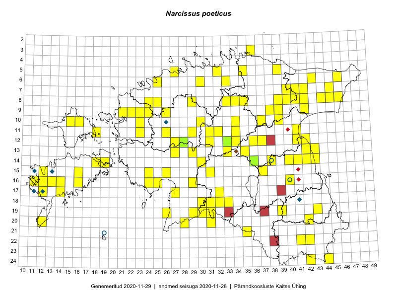

Narcissus poeticus
Uuendatud: 2016-12-01
Kaardile koondatud taksonid: Narcissus poeticus L.

Kaart põhineb 144 kirjel, neist vaatlusi 142 ja eksemplare 2.
Kuvatud viited 20 esimesele andmebaasikirjele, ülejäänud PlutoFis
- Peedu Saar, Timo Luhamäe: 2015-05-11: 12-36: GPS punkt
- Peedu Saar, Timo Luhamäe: 2015-05-11: 12-37: GPS punkt
- Peedu Saar, Liina Oja: 2015-05-22: 19-30: GPS punkt
- Peedu Saar, Liina Oja: 2015-05-22: 19-29: GPS punkt
- Peedu Saar, Liina Oja: 2015-05-21: 16-24: GPS punkt
- Peedu Saar, Liina Oja: 2015-05-21: 16-25: GPS punkt
- Peedu Saar, Liina Oja: 2015-05-21: 16-25: GPS punkt
- Toomas Kukk, Indrek Tammekänd: 2015-05-09: 13-27: GPS punkt
- Peedu Saar, Toomas Kukk: 2015-05-27: 10-16: GPS punkt
- Tiit Hallikma, Indrek Tammekänd, Toomas Kukk: 2015-06-09: 12-28: GPS punkt
- Peedu Saar, S. Laherand: 2015-06-01: 07-42: GPS punkt
- Toomas Kukk, Indrek Tammekänd: 2015-05-10: 12-33: GPS punkt
- Toomas Kukk, Indrek Tammekänd: 2015-05-10: 13-33: GPS punkt
- Toomas Kukk, Indrek Tammekänd: 2015-05-10: 12-34: GPS punkt
- Peedu Saar, Liina Oja: 2015-06-12: 13-35: GPS punkt
- Toomas Kukk, Raivo Kalle: 2015-05-12: 10-39: GPS punkt
- Toomas Kukk, Raivo Kalle: 2015-05-12: 10-39: GPS punkt
- Toomas Kukk, Raivo Kalle: 2015-05-12: 10-39: GPS punkt
- Toomas Kukk, Raivo Kalle: 2015-05-12: 10-39: GPS punkt
- Toomas Kukk, Raivo Kalle: 2015-05-11: 09-39: GPS punkt